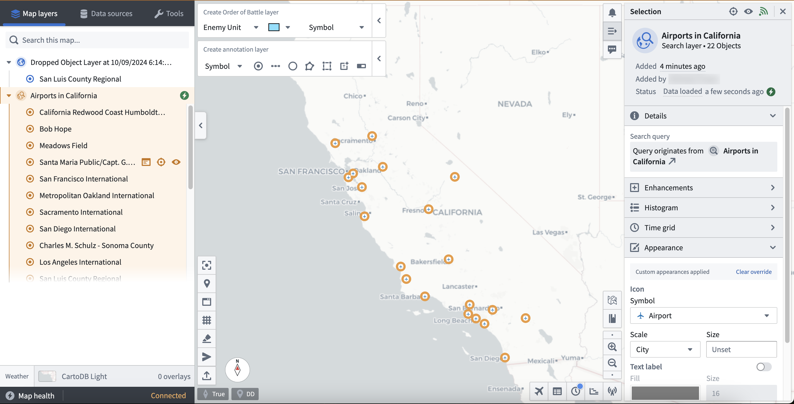
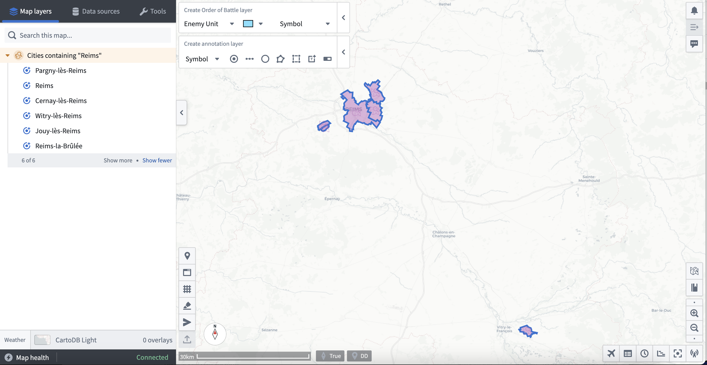
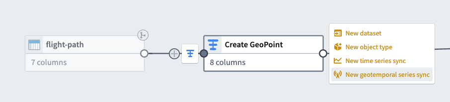
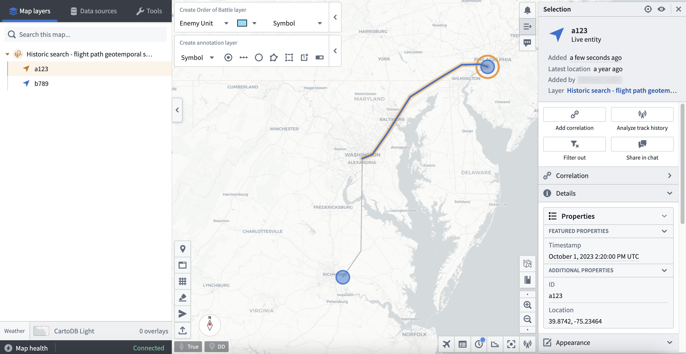
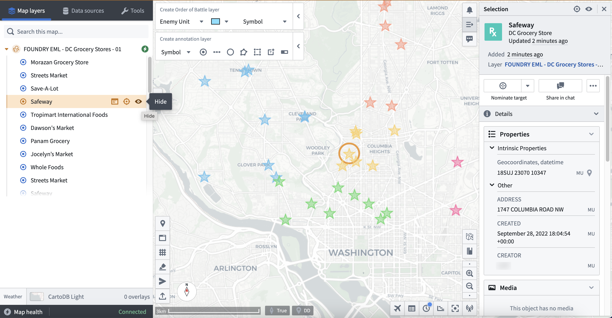

You can add geospatial data configured as part of your Foundry Ontology to Gotham's Gaia application through varying methods based on your use case. To make Foundry Ontology data accessible to Gotham, you will need to establish a unified representation of your ontology across both by type mapping the object types of interest using Foundry's Ontology Manager.
:::callout{theme="neutral" title="Note"}
If your enrollment contains Map Rendering Service (MRS), you do not need to complete the type mapping process to view Foundry objects in Gaia. You can create new ontology objects from or add existing objects to Gotham without additional configuration. Check whether your enrollment contains MRS. If your enrollment does not contain MRS, review when to type map object types to determine whether you need type mapping for search templates, function-backed EMLs, or versioned object set-backed EMLs.
Contact Palantir Support with questions about MRS availability, installation, or Gotham documentation.
:::
There are six methods you can use to add data in your Foundry Ontology to Gaia once you type-map an object type in Foundry to enable Gotham integration:
More information about each method is available in the table below:
| Drag and drop | Foundry object search | Search templates | Geotemporal series sync | Function-backed Enterprise Map Layer | Versioned object set-backed Enterprise Map Layer | |
|---|---|---|---|---|---|---|
| Object quantity supported | 1 object at a time or 1 object set with up to 5,000 objects | 5,000 | 5,000 | 5,000,000 | 5,000 | 5,000 |
| Data refresh latency | Static | Static or 30 seconds | Static or 30 seconds | Real time | Configurable | Configurable |
| Data filtering capability | Within Foundry's Object Explorer | Within a Gaia map's left-hand panel | Within a Gaia map's left-hand panel | Within a Gaia map's left-hand panel | Within a Gaia map's left-hand panel or Foundry's Code Repositories | Within Foundry's Object Explorer |
| Recommended use cases | Quickly move objects from Foundry's Object Explorer into Gaia | Perform simple object searches | Create a specific set of filters through YAML on an object set for reuse across Gaia maps | Integrate high-scale data which updates in real time | Leverage flexibility and power of Foundry Ontology Functions | Ensure map layer updates when objects are added or removed from Foundry |
| User administrative prerequisites | None | None | Access to Gaia admin application | None | Access to Gaia admin application | Access to Gaia admin application |
| Level of effort to implement | Low | Low | Medium | High | High | High |
:::callout{theme="neutral"} To add Foundry data to Gaia via search templates, function-backed Enterprise Map Layers, or versioned object set-backed Enterprise Map Layers, you will need access to Gaia's admin application. Contact Palantir Support with questions about admin application access. :::
The sections below provide detailed instructions to implement each integration method.
You can drag and drop individual objects or object sets derived from saved explorations (which may contain up to 5,000 objects) from Foundry onto a Gaia map.
To drag and drop individual objects from Foundry to your Gaia map:
Dropped Object Layer [Date] [Time].Before you can drag and drop object sets from Foundry to your Gaia map, you must first create a versioned object set from an existing object type. To create a versioned object set:
name property, you can filter for a selection of location objects by entering where name is location_1 or where name is location_2 and pressing enter or return on your keyboard.:::callout{theme="success"} You can also filter for objects by applying object filters directly within charts and graphs on the object type's Ontology Explorer view. :::
After you create and save a versioned object set as an Exploration, you can follow the steps below to drag and drop the it to your Gaia map:

:::callout{theme="neutral" title="Duplicate object detection"} When you add objects to a Gaia mapâindividually or as part of an object set from Object Explorer or WorkshopâGaia notifies you if any objects already exist on the map. You can include or exclude duplicates. Gaia highlights duplicate objects, even when their parent map layer is collapsed. :::
:::callout{theme="success"} You can also drag and drop objects to your Gaia map from other object views within Gotham. :::
You can search for Foundry object types within the Data sources section of Gaia's left-hand panel. Additionally, you can apply geometric and time-based filters to objects before you add them to your map. To search for Foundry object types from Gaia:
All will add all objects from the discovered object type to your map.
* View will only add the objects that are available within your current map view.
* Draw will add objects to the map that reside within a drawn shape you can configure and add from the search panel.
* Select enables you to select an item from the active map.Static range or Rolling window.
:::callout{theme="neutral"}
* If you are unable to view an object after loading your search results, then you should verify that the object type contains a geospatial property indicating its location, such as geopoint or geoshape.
* If you are unable to search for your objects in Gotham after completing the prerequisite type mapping in Foundry, then the Foundry search feature may not be enabled in your Gotham enrollment. Contact Palantir Support for help enabling this capability.
:::
You can create a search template in the Gaia admin application to pre-configure a custom object search interface when adding Foundry objects to a map through the left-hand panel's Data sources tab.
To create and implement a search template, launch the Gaia admin application and follow the steps below:
Description will appear at the top of the search template interface.
* Tab ID will enable mapping between your geo search and search template.
* Tab icon will appear in the Data sources tab upon user search.
* Template ID will match Tab ID and enable mapping between your geo search and search template.
* Classification, which may be optional depending on your enrollment.
* ACL Groups will set permissions for group access.You can reference an example geo search that enables a user to search for cities in France and display their geographic boundaries on a Gaia map once paired with a search template.

templates: and insert YAML code containing your search template configurations and geo search mapping. You can reference an example search template YAML code block below.- id: french_cities # Matches the `Tab ID` and `Template ID` fields from geo search.
title: French cities # Search template name as it will appear in the `Data sources` panel.
query:
queryType: AND # Define your query type and insert relevant subqueries.
subqueries:
- inputId: keyword
queryType: KEYWORD
- field: object_type
queryType: OBJECT_TYPE
value:
- # Object Type's RID
dataSource: foundry-federation
namespaces:
- foundry-federation
description: Search for French cities and display their boundaries.
integratedDataSetIds: []
inputs:
- hint: Type a keyword...
id: keyword
inputType: TEXTFIELD # Enables free text search.
label: Keyword
aggregations: []
You can navigate back to your Gaia map to test your search template. Type the name of your search template in the Data sources tab in the left-hand panel, or select it manually from the Integrated data sources sub-section. Select your search template to launch the pre-configured interface backed by your geo search and YAML configurations. Search for objects using the Keyword search bar or any other custom configurations made in your YAML code, then enter a Search title before you select the blue Search button at the bottom of the left-hand panel.
The results of your search will then appear on your Gaia map for additional exploration.

You can use Foundry's Pipeline Builder to create a geotemporal series sync from an existing dataset, enabling you to add high-scale, real-time geotemporal data to your Gaia map without additional configurations.
To create a geotemporal series sync in Foundry:
latitude and longitude fields and create a new geo_point column.Create GeoPoint through the edit box in the top left corner of your transform.Create GeoPoint transform node's Add output button and select New geotemporal series sync. The image below shows the menu of output types available in Pipeline Builder.
Local System.X icon to the right of each or the Clear unmapped properties button.
Create GeoPoint transform with green Deployment up-to-date text at the bottom of the node confirming successful deployment.To add your newly created geotemporal series sync to your Gaia map:
All will add all objects from the discovered object type to your map.
* View will only add the objects that are available within your current map view.
* Draw will add objects to the map which reside within a drawn shape you can configure and add from the search panel.
* Select enables you to select an item from the active map.Once your geotemporal series sync loads as part of Gaia's Map layers, you can select individual entities - such as a specific flight path - and make additional configurations.

You can add data to your Gaia map as a part of an Enterprise Map Layer (EML) backed by a Function written in Foundry and published to your ontology.
To create a TypeScript Function which outputs an object set from an existing object type to back a Gaia EML:
What are you building? and select TypeScript Functions as your language.index.ts file and insert your own function; you can reference the example code below.import { Function, Integer } from "@foundry/functions-api";
import { Objects, ObjectSet, ObjectTypeName };
export class MyEmlFunction{
@Function()
public myFunctionName(): ObjectSet<ObjectTypeName> {
return Objects.search().ObjectTypeName().filter(location => location.propertyTypeToSearch.exactMatch("match-parameter"));
}
}
Next, launch Gaia's admin application to establish a Foundry Function-backed EML. Once you navigate to the Gaia admin app, you can:
Foundry function EML.geopoint property ID from your object type.:::callout{theme="neutral"}
You can locate and copy a property ID from your object type Properties page in Ontology Manager; to do so, select the ellipsis icon to the right of your geopoint property and choose Copy property id.
:::
You can now add your Foundry Function-backed EML to your Gaia map by searching for its name using the Data sources tab in the left-hand panel. Gaia groups EMLs as Reference data layers under Curated data sources.

You can select or hide individual objects from your EML using the left-hand panel or by choosing on object's icon from your current view.
You can add data to your Gaia map as a part of an EML backed by a versioned object set you create from an object type in the Foundry Ontology.
To create a versioned object set, follow the instructions above in the Drag and drop individual objects and saved explorations section.
:::callout{theme="neutral"} If your enrollment contains Map Rendering Service (MRS), you can import versioned object set-backed EMLs without type mapping the backing object type. In the left-hand panel, search for and select the EML in the Data sources tab to add the object set as a reference data layer. Contact Palantir Support with questions about MRS availability or functionality. :::
To establish a versioned object set-backed EML in the Gaia admin applications, follow the instructions above in the Use a Function-backed Enterprise Map Layer section. Set the EML type as Versioned object set EML instead of Foundry function EML; you will not need to insert a Function rid.
You can now add your versioned object set-backed EML to your Gaia map by searching for its name using the Data sources tab in the left-hand panel; Gaia groups EMLs as Reference data layers under Curated data sources.